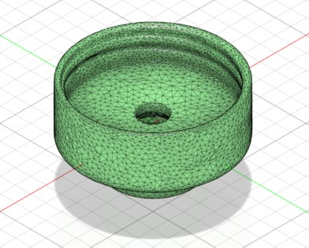
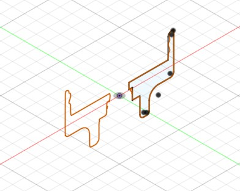
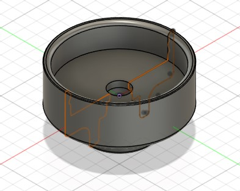

I developed a structured and efficient workflow for converting 3D scan data into fully editable CAD models, focusing on simplifying what is often a complex and time-consuming process. By refining techniques for mesh cleanup, strategically extracting cross-sectional geometry, and rebuilding parts using parametric modeling, I established a repeatable method that preserves design intent while significantly improving speed and accuracy. Through iterative problem-solving, I identified a clear path from raw scan to manufacturable CAD, demonstrating a strong understanding of reverse engineering and the ability to turn unstructured data into precise, usable geometry.
Mesh → Sketch → Solid Body



MESH · raw scan data
MESHSKETCHSOLID BODY
← Click arrows or dots to navigate →
REVERSE ENGINEERING · DESIGN INTENT
The gallery shows the parametric reconstruction workflow: starting from scan mesh, transitioning into 2D section sketches, and finally the complete solid body.
Each stage builds upon the previous to recover original design intent.